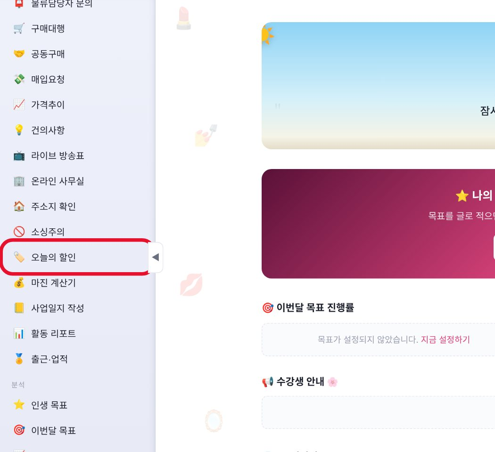
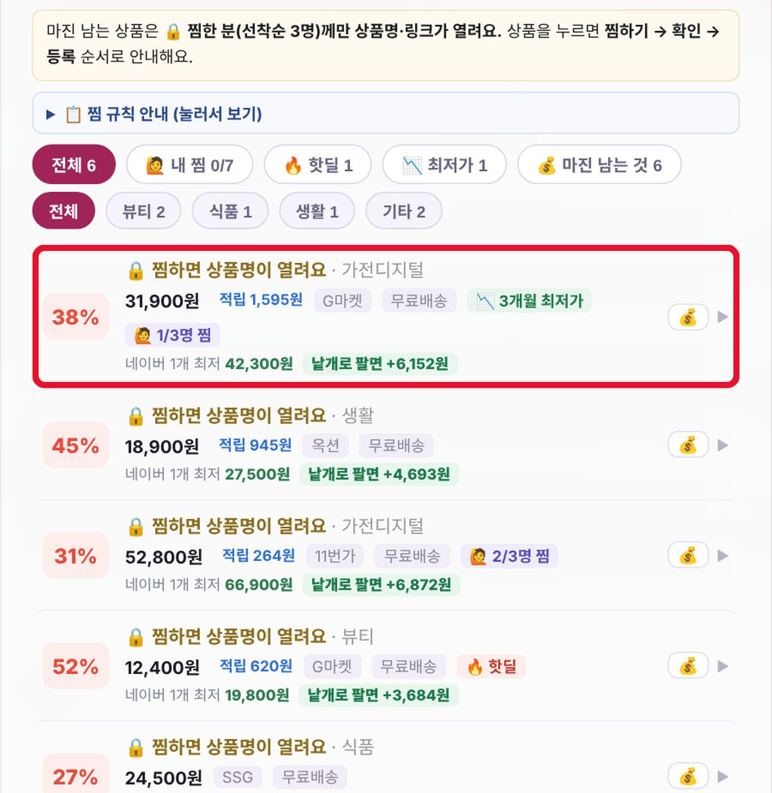
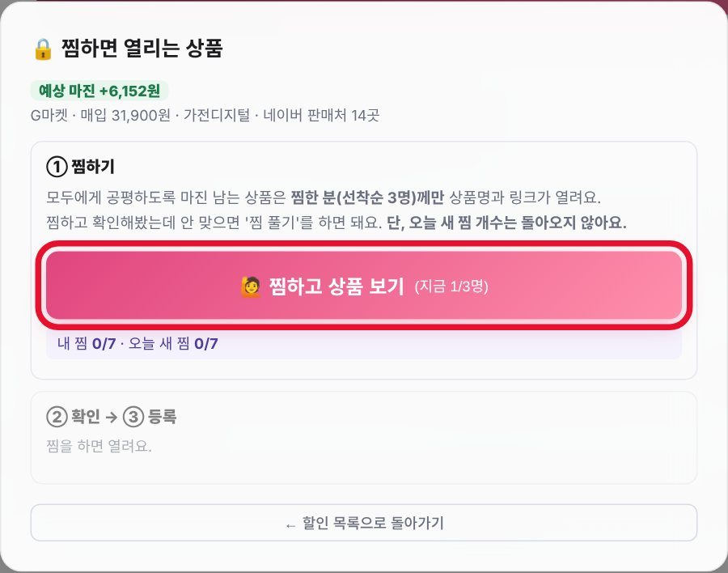
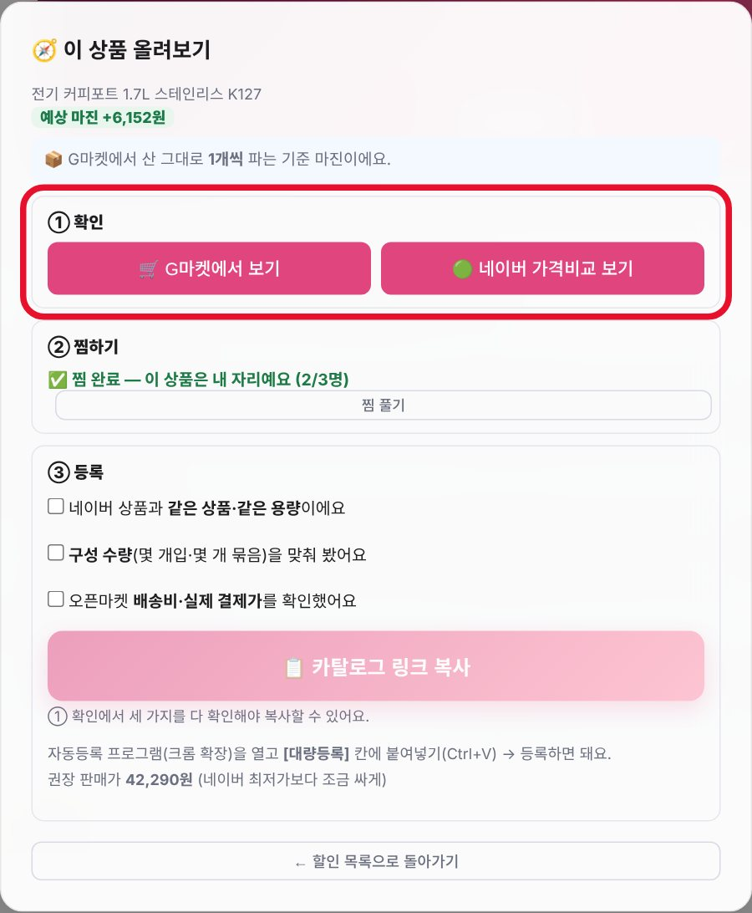
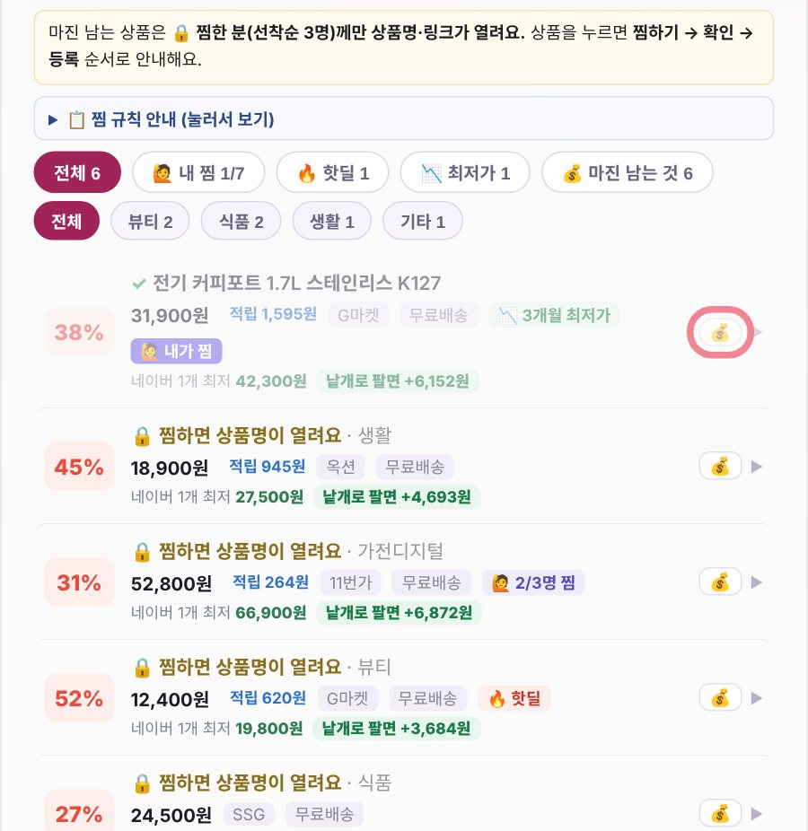
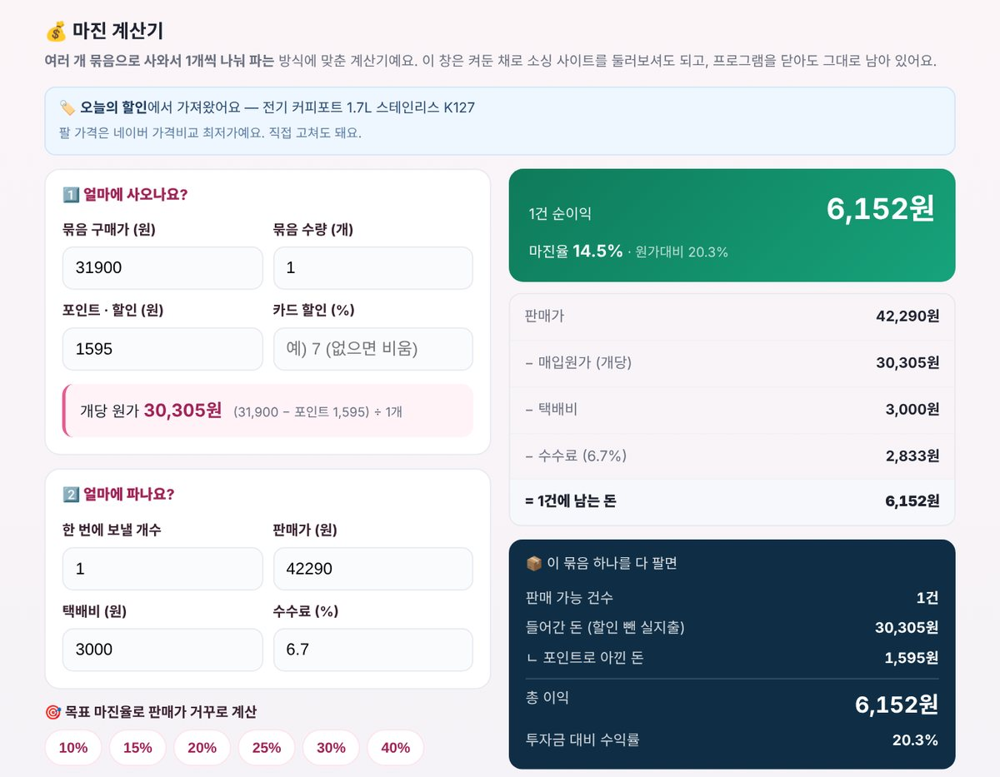
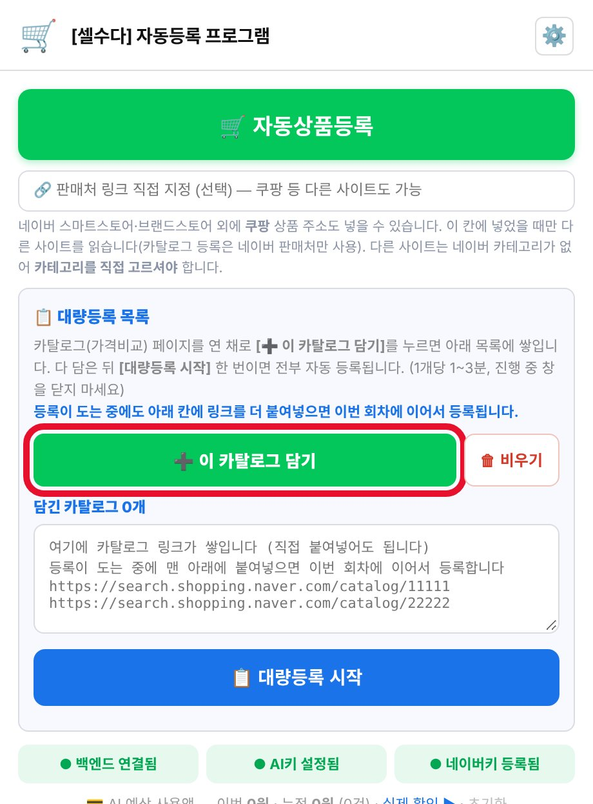
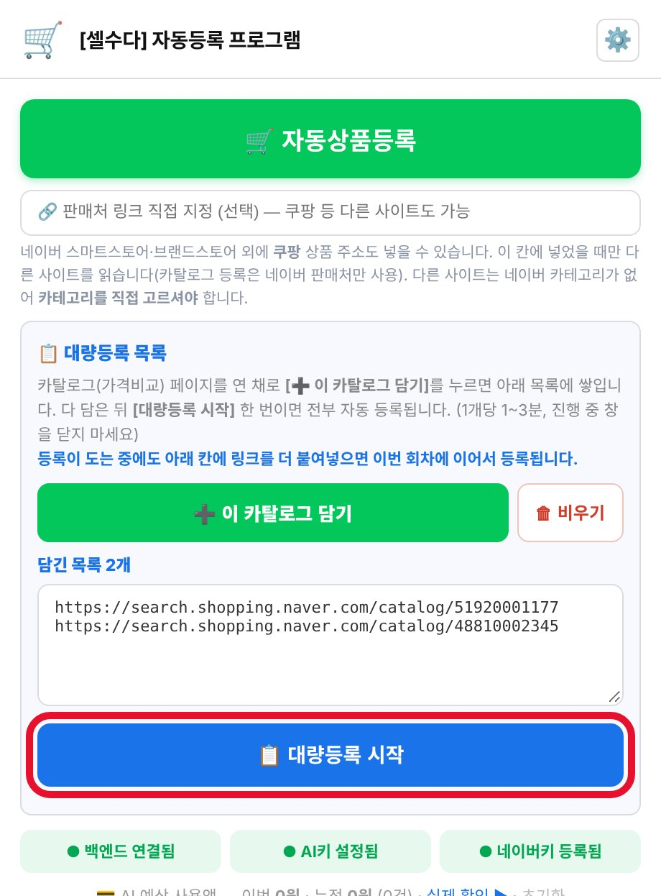
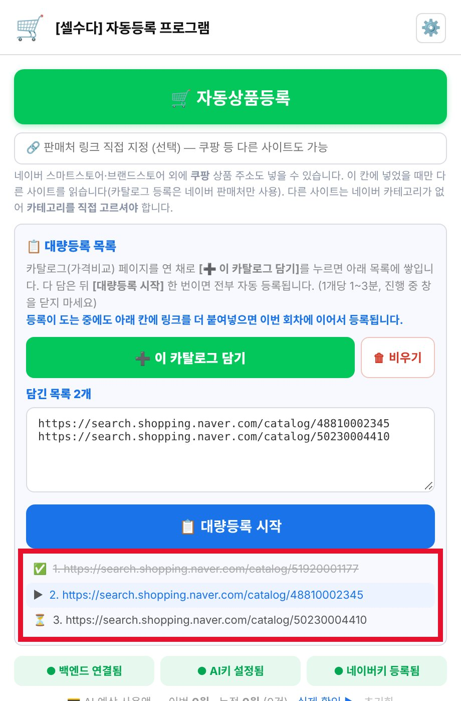

“지금은 찾는 것보다
내가 올리는 게 먼저예요.”
아직 스토어에 등록된 상품이 없어서, 오늘은 상품 찾는 법(소싱)은 잠시 내려놓고 이미 찾아져 있는 상품을 확인하고 올리는 순서만 처음부터 끝까지 함께 연습했습니다. 처음에는 코치가 시범을 보이고, 이어서 대표님이 직접 세 번 해보셨습니다.
셀러들의 수다 오늘의 할인에서 상품을 찜하고 → 같은 상품인지 확인 → 마진 계산 → 남는 상품만 카탈로그 담기. 세 개를 직접 해보셨고, 그중 남는 2개를 등록 목록에 담았습니다.
① 같은 상품인가(영어 모델명) → ② 돈이 남는가(마진 계산기) → ③ 남으면 담기(초록 카메라). 가격부터 보지 않고 항상 ①번부터 봅니다.
다른 건 하지 않고 이 순서 하나만 댁에서 혼자 할 수 있을 때까지 연습합니다. 바로 아래 ‘혼자 따라 하는 순서’를 보면서, 보내드리는 녹음을 들으며 따라 하시면 됩니다.
댁에서 이 순서대로 하나씩 따라 하시면 됩니다. 급하게 하지 않으셔도 됩니다. 사진은 지금 쓰시는 셀러들의 수다 화면 그대로이고, 빨간 테두리가 누를 곳입니다. 사진 속 상품과 숫자는 예시입니다. 사진이 작으면 사진을 누르면 크게 보입니다.
셀러들의 수다를 켜고, 왼쪽 메뉴를 아래로 조금 내리면 오늘의 할인이 있습니다. 바로 아래에 ‘마진 계산기’가 있습니다.

왼쪽 메뉴의 ‘오늘의 할인’. 누르면 화면 가운데에 할인 상품 목록이 뜹니다.

빨간 테두리처럼 줄 하나를 누릅니다. ‘내 찜 0/7’은 오늘 찜한 개수입니다. 한 번 눌러 본 줄은 흐리게 바뀝니다.
목록 위쪽의 ‘내 적립’ 체크 칸은 내가 받는 적립을 표시해 두는 곳입니다. 잘 모르겠으면 그대로 두고 코치에게 물어보세요.

‘찜하면 열리는 상품’ 창. 맨 아래 ‘할인 목록으로 돌아가기’를 누르면 목록으로 돌아갑니다.
찜을 풀어도 오늘 찜 개수는 돌아오지 않습니다. 예상 남는 돈이 넉넉한 것부터 고르세요.
둘 다 한 번씩 누르면 인터넷(크롬) 창에 두 화면이 열립니다. 인터넷 창 맨 위의 탭을 누르면 두 화면을 오갈 수 있습니다.

‘이 상품 올려보기’ 창. 빨간 테두리 안의 두 버튼을 누릅니다. 왼쪽이 사는 곳, 오른쪽이 파는 곳입니다.
가격은 아직 보지 않습니다. 영어와 숫자로 된 모델명만 봅니다.
모델명이 다르면 올리지 않습니다. 다른 상품을 고릅니다.

찜한 상품 줄 오른쪽 끝, 빨간 테두리의 돈주머니를 누릅니다.

마진 계산기. 오른쪽 위 초록 칸(1건 순이익)이 남는 돈입니다.
채워진 숫자는 프로그램이 모아 온 값이라 대표님 화면의 실제 가격과 다를 수 있습니다. 아래 네 칸만 실제 화면과 견주어 보고, 다르면 고쳐 적습니다.
| 묶음 구매가 | 사는 곳 화면에 실제로 보이는 할인가(쿠폰 적용가) |
|---|---|
| 포인트 · 할인 | 실제로 돌려받는 적립금. 없으면 지웁니다 |
| 판매가 | 카탈로그 최저가에서 10원 뺀 금액 (미리 채워져 있습니다) |
| 택배비 | 가벼운 상품 3000 · 설치해 주는 큰 가전은 0으로 고치기 |
묶음 수량 · 한 번에 보낼 개수 · 수수료 · 카드 할인 칸은 건드리지 않습니다.
남는 돈이 마이너스(−)면 올리지 않습니다. 다른 상품으로 갑니다.
세 칸 중 빨간색이나 회색이 있으면 더 누르지 말고 코치에게 물어보세요.

자동등록 프로그램 창. 빨간 테두리의 초록 버튼이 ‘이 카탈로그 담기’입니다.
맨 위 큰 ‘자동상품등록’ 버튼과 빨간 글씨 ‘비우기’는 누르지 않습니다. ‘비우기’는 담아 둔 목록을 모두 지웁니다.
셀러들의 수다 창의 ‘③ 등록’(체크 세 개 → 카탈로그 링크 복사 → 이 흰 칸에 붙여넣기)은 같은 목록에 담는 다른 방법입니다. 상담에서 배운 ‘이 카탈로그 담기’로 하시면 되고, 둘 중 하나만 하면 됩니다.

‘담긴 목록 2개’처럼 개수를 확인하고, 빨간 테두리의 파란 버튼을 누릅니다.
누르면 버튼 아래에 상품마다 한 줄씩 진행 상황이 나옵니다.

빨간 테두리 안이 진행 상황입니다. 위에서부터 끝난 것, 지금 하는 것, 기다리는 것입니다.
| ⏳ 모래시계 | 차례를 기다리는 중 |
|---|---|
| ▶ 파란 세모 | 지금 등록하는 중 |
| ✅ 초록 체크 | 등록 완료. 주소에 줄이 그어집니다 |
| ⏭ 건너뜀 | 이미 등록한 상품이라 넘어간 것. 괜찮습니다 |
| ✋ 손바닥 | KC 입력 대기. 아래 설명을 보세요 |
| ⚠️ · ❌ · ⏸ | 확인이 필요한 것. 화면을 사진 찍어 코치에게 보내 주세요 |
모든 줄이 모래시계가 아닌 다른 표시로 바뀌면 끝난 것입니다. 등록이 끝난 상품은 흰 칸의 목록에서 저절로 빠지고, 안 된 상품만 남습니다.
커피포트·세탁기 같은 전기제품은 끝날 때 ‘KC 인증 입력 후 등록’ 창이 뜰 수 있습니다. 번호를 지어내서 적으면 안 됩니다. 모르면 회색 ‘나중에’를 누르고 코치에게 물어보세요. 그 상품은 지워지지 않고 보관됩니다.
등록을 돌리기 전에 여러 개를 담아 두어도 됩니다. 셀러들의 수다에서 할인 목록으로 돌아가기를 누르고 2번부터 똑같이 합니다. 찜은 하루 7개까지이고, 밤 12시에 모두 풀려 다음 날 다시 7개를 찜할 수 있습니다.
순서만 기억하세요. 같은 상품인가 → 돈이 남는가 → 남으면 담기.
영상 자료는 예전 버전 화면이라 하루 3개로 나옵니다. 지금은 하루 7개입니다.
항목을 누르면 세부 내용이 열립니다.
체크 표시는 이 브라우저에서만 저장됩니다.